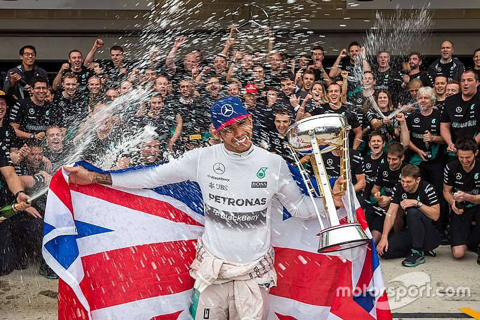

Mercedes

The Silver Arrows
Mercedes was a team in 1954 and 1955 but only returned to the sport in 2010 with newcomer Nico Rosberg and legand Michael Schumacher but it wasn't until 2014 with Lewis Hamilton that they started winning championships. They dominated the sport with team principle Toto Wolff and drivers Hamilton winning 6 titles and Rosberg winning 1. Recently they have struggled to build a good car but this year they are second in the standings and maybe involved in a title fight with George Russell.
